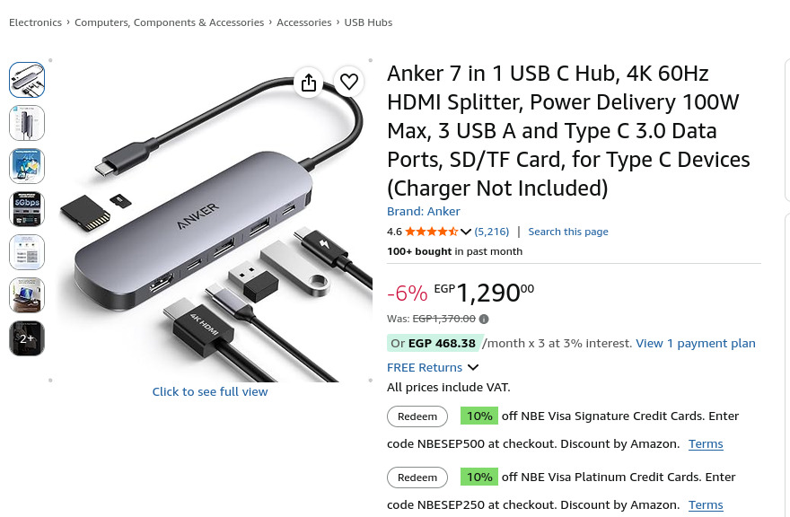

This week
validate() call before configure() that the renderer's stride depends on
libpipeline_core.so (create, start, stop, calibration, snapshot) with its own render thread and EGL context, plus a small test program to check it on the board
emb_cli and built ivi-homescreen for the Pi 5 with emb cross: pinned the right Flutter version, initialised the missing submodules, and turned on BUILD_COMPOSITOR so the shell hosts platform views
emb cross, and ran the platform view from a PC over SSH, including working through emb setup problems (PATH, Flutter version pin, submodules, a full disk, missing arm64 engine tools)
camera_fps flag (the limit was the sensors' auto exposure, not the GPU), and the zoom and size were tuned with BEV_PX_PER_M, BEV_WIDTH, BEV_HEIGHT, BEV_CAM_FPS and BEV_CAMERAS
bev_view package and merged it into main locally: the 360 view is now a live two-camera blend shown through his platform view, running on the Pi 5
BEV_STAT=1, and as a console line on the 360 view), using Joel's stats: fps, source and view size, buffer type, fence waits
camera:N source its own calibration slot, and added a short retry when a camera is still busy while one view closes and the next opens
emb cross with --deploy-dir, copy the native libbev_view.so over the bundled one, and start the app over SSH with the Wayland environment
Details
Two live cameras are opened by libcamera and their DMA-BUFs are imported straight into the GPU, where a shader blends them into the bird's-eye-view canvas. The result is handed to ivi-homescreen as a platform view through Joel's delivery code, and the Flutter app shows that view. Nothing is copied through the CPU on the way.
pipeline_runtime) that opens every camera libcamera reports.libpipeline_core.so with its own render thread and EGL context, and a small test program for the board.emb cross build and deploy of the shell and the app to the Pi 5.
The commands in the order I ran them, with the problem each one hit and how it was solved.
Everything runs on the PC, and emb cross builds for the Pi 5 and copies the result over SSH.
cd /media/abdu/LinuxHome/Embedded_Linux/git_ignoring/gsoc/emb_cli
eval "$(./bootstrap.sh --shellenv)"
emb --version
Problem: emb: not found. The command is only on the PATH after the bootstrap script
prints its environment. Fix: run the eval line in every new terminal.
export EMB_CACHE_DIR=/media/abdu/LinuxHome/emb-cache
echo 'export EMB_CACHE_DIR=/media/abdu/LinuxHome/emb-cache' >> ~/.bashrc
Problem: the sysroot build failed with dd failed: No space left on device.
The default cache is on the small system disk. Fix: point EMB_CACHE_DIR at the
bigger disk, delete the half-written temporary files, and start again.
emb doctor
emb setup --config ../configs --yes
. ./setup_env.sh
Problem: the setup did not use the Flutter version ivi-homescreen expects. Fix: read it from the
shell's own .flutter-version file and pass it in.
cat ../ivi-homescreen/.flutter-version
emb setup --skip-deps --skip-sync --arch arm64 --flutter-version "$(cat ../ivi-homescreen/.flutter-version)"
. ./setup_env.sh
flutter --versioncd /media/abdu/LinuxHome/Embedded_Linux/git_ignoring/gsoc/ivi-homescreen
git submodule update --init --recursiveProblem: the shell build failed because several submodule folders were empty. Fix: the command above.
cd /media/abdu/LinuxHome/Embedded_Linux/git_ignoring/gsoc/emb_cli
. ./setup_env.sh
emb engine --arch arm64 --mode release
Problem: the release build of the app could not find an arm64 gen_snapshot.
Fix: build the arm64 release engine, which provides it.
Problem: the app started, but the platform view failed with MissingPluginException on
flutter/platform_views. The shell only registers that handler when built with
BUILD_COMPOSITOR, and the Pi manifest had it off for the wayland-egl backend.
Fix: add it under wayland-egl in ivi-homescreen/.emb/raspberry-pi.emb.yaml
and rebuild the shell.
wayland-egl:
BUILD_COMPOSITOR: 'ON'cd /media/abdu/LinuxHome/Embedded_Linux/git_ignoring/gsoc/emb_cli
eval "$(./bootstrap.sh --shellenv)"
. ./setup_env.sh
emb cross /media/abdu/LinuxHome/Embedded_Linux/git_ignoring/gsoc/ivi-homescreen \
--target rpi5-trixie --build --backend wayland-egl --no-verify \
--app /media/abdu/LinuxHome/Embedded_Linux/git_ignoring/gsoc/libcamera-dmabuf-capture/flutter-surround-view \
--mode release --deploy abdu@192.168.100.23 --deploy-dir ui
This builds the shell, bundles the Flutter app, and copies both into ~/ui on the Pi.
Problem: the deployed libbev_view.so was cross-built against libcamera 0.4, but the Pi
runs 0.7, so it would not load. Fix: rebuild the library on the Pi and copy it over the bundled one
after every deploy.
ssh abdu@192.168.100.23 'cp ~/libcamera-dmabuf-capture-live/build-pi/libbev_view.so ~/ui/lib/libbev_view.so'ssh -t abdu@192.168.100.23 'cd ~/ui && BEV_STAT=1 WAYLAND_DISPLAY=wayland-0 XDG_RUNTIME_DIR=/run/user/$(id -u) ./homescreen -b . -f'The Flutter app runs on the Pi 5 through ivi-homescreen with two live cameras at 30 fps. It shows a live 360 view, plus live front and right views as normal or bird's-eye, each with an fps readout. Rear, left and the 2D view are still placeholders. Open points are the release fences, which never signal on the wayland-egl backend (every frame waits its 34 ms and draws over the buffer anyway), calibrating the config for the live rig, and the runtime controls (zoom and calibration), which the app does not have yet.
For the live test with the car I want the app on a tablet-sized screen. I ordered an Anker 7 in 1 USB-C hub with HDMI to connect the Pi's screen to my tablet. It has not arrived yet, so I will set it up and use it next week, once it arrives.

A recording of the Flutter app running on the Pi 5 through ivi-homescreen, with the live cameras.